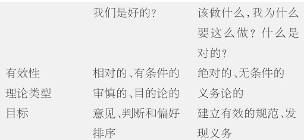

在20世纪80年代对商谈伦理学最初的研究中，哈贝马斯交换着用“道德”和“伦理”两个术语。直到1991年他才开始区分两者，但是一直使用“商谈伦理学”来表示修正过的理论，因为这比将其再命名为“道德的商谈理论”要简洁。实际上，在20世纪90年代修正过的理论中，哈贝马斯将商谈分为三类：道德商谈、伦理商谈和实用商谈，每一类代表实践理性的一种不同用途。这种区分的实际意义在于引入了一种与道德商谈范畴并立的伦理商谈范畴，这样，两个商谈领域就在政治理论研究中得到了重新的设定。
在探究伦理商谈与道德商谈不同的本质和功能之前，我们必须先简单地看看哈贝马斯是如何在实用商谈中使用“实用的”这个术语的。直到目前看来，“实用的”这个词指的是某事物的社会功能或用途。哈贝马斯的道德观念是实用的 ，因为它把道德商谈看做解决争端的社会机制。他的意义理论是实用的，因为它把语言的运用看做协调行为、建立社会秩序的途径。但是，在这里哈贝马斯是在狭义上使用这个词。实用商谈涉及对达成预定目标的手段的理性选择。实用商谈不关心对目标的选择。实用商谈是工具理性的对话形式，同政治、法律领域有特殊的密切联系，原因在于政治和法律本质上同可行性有关。
在黑格尔时代之前，伦理和道德通常被认为是等同的。但是，这两个词代表着对人类生活思考的不同传统。“伦理”（ethics）一词，正如哈贝马斯经常指出的那样，有古典和现代两种用法。它的字根来自古希腊语ethos，该词既指城邦的习俗，又指其公民的习性和气质。在现代时期，黑格尔用Sittlichkeit（常译做“伦理生活”）来表示共同体的具体生活方式，它一方面包括共同体的价值观、理想和自我理解，另一方面包括惯例、制度、法律等等。
哈贝马斯的伦理商谈概念有几个鲜明的特征。
1.伦理商谈是“目的论的”，它关注“目标的选择”和“对目标的理性评估”（《证明和运用》，第4页）。当实用商谈以某个想要的目的为给定目的并且考虑用最好的手段来实现时，伦理商谈对这些目标起到评价的作用。
2.伦理商谈通过考察“对我有益”或“对众人有益”的是什么来评价这些结果。［《包容他者》（德文版），第41页；《证明和运用》，第5、8页］这些是特殊的而非普遍的善。（相较之下，道德考虑的是正确和错误的标准，这些标准的好坏是放之四海而皆准的，它们对于每个人的影响是均等的。）商谈伦理提出的善观念与个人的生活历史及社群的集体生活历史有关。哈贝马斯将与个人生活有关的商谈称为“伦理-存在的”，将与集体或群体生活有关的商谈称为“伦理-政治的”。
3.伦理商谈是审慎的：它关注人们满足期望和目的的方式，它不仅关注现在的幸福，而且关注将来的和全面考虑下的全体民众的幸福。
4.伦理商谈突出了与个人生活历史、个人从属于其中的特定传统或文化群体有密切关系的价值观的重要性。对于价值观哈贝马斯有非常具体的认识：价值观是文化或伦理生活基本的象征性要素。说价值观是基本的手段，意思就是价值观不能再分解为更简单的形式、不能用更次级的语汇来阐释，比如用来表达偏好、愿望、需求或理由等的语汇。价值观决定了偏好，而非相反。价值观塑造了我们的需求、期望和利益，这些在哈贝马斯看来并非由生理结构或社会传统决定并赋予人类，而总是需要阐释的。由于价值观总是和特定社群的组织结构密切相关，每个人在融入体制和社群习俗的社会化过程中将吸收并内化该社群的基本价值观。因此，这些价值观将形成个人自我认同的核心部分。价值观因此并不是和自然事实一样的自在之物，完全脱离人类而存在。价值观内在于人类，人类也身处其中。所以，虽然个别价值观允许阐释也易于产生渐进式的变化，但人类不能轻易地脱离这些价值观而存在。最后，价值观在本质上是渐变的，而规范则是绝对的：价值观容许有或高尚或卑下的不同，但规范只有有效和无效之分。说某个行为比另外一个行为在道德上更错误几乎没有什么意义，但是说某个选择比另外一个选择更好则完全能为人理解。
5.哈贝马斯对于善观念和价值观念的理解具有伦理商谈的逻辑特征。作为伦理商谈的源泉，意见、判断和优选次序只具有“相对的”或“有条件的”有效性。（相形之下，作为成功的道德商谈之源泉的规范则具有普遍的、无条件的有效性。虽然有效的道德规范意味着具有凌驾于不同文化传统百家争鸣之上的有效性，价值观却只在某个特定的传统或文化群体中有效。
6.伦理商谈关注的是个体或群体的自我认识。不管针对的是哪个对象，从广义上来讲伦理问题都是阐释的问题。伦理商谈以自我阐明、自我发现为目标，在某种程度上还以自我建构为目的。当为社会所接受时，伦理商谈以判断、意见的形式出现，阐明为了某个人的整体福利该追求何种目的、价值、利益。［《证明和运用》第9页；《在事实与规范之间》，第151—168页；《包容他者》（德文版），第38—50页］。
7.伦理商谈提出了关于可信性的有效性声称［《包容他者》（德文版），第41页］。至于这种有效性声称是如何与其他三种有效性声称（真实性、正当性和真诚性）相一致的，这点尚不是很清楚。可信性似乎可以被归为真实性在实践领域的变体，它与哈贝马斯的理论表述中简练优美的三和弦不相协调，因为哈贝马斯在商谈伦理学中引入这一修订时，并不很在意要使它和之前关于意义的语用学理论相兼容。这种不协调表明，我们的道德概念比起哈贝马斯简洁的概念区分使它们呈现出来的面貌要复杂凌乱得多。
一览表：伦理商谈与道德商谈的区别

伦理商谈的本质特征之一是，它所源自其中的意见只有“相对的”或“有条件的”有效性。哈贝马斯没有关于这种相对有效性的太多表述，但是我们可以假设这是一个范围的问题。有效的道德规范应当对商谈的所有参与者或所有受商谈影响的人都具有普遍约束性，但是伦理价值或判断只对相关群体的成员具有约束力。虽然如此，群体的成员可以共同地、自由地赞同关于他们的善观念的某些方面的评价，一个表达了他们共同持有的价值观的评价，这一事实本身就应当具有一定的说服力量，尽管我们接下来会看到，它在重要性上还没有胜过任何与其相对的道德观念。
所以，文化群体为伦理价值和善的具体所指提供了框架。这就提出了一个问题，即何为文化群体，怎样才算是一个合法的评价体系。我认为，哈贝马斯假定这主要是一个经验式的社会学问题。当然，这亦是哲学考虑的对象。比如，关于特定文化群体的讨论并没有涵盖所有的左撇子、所有的女性或者所有阿森纳足球俱乐部的支持者。可以论证的是，这些人都是某个全体或阶层的成员，但是这种成员资格不具有任何伦理-政治意义（虽然它对于个人的生活当然也可能具有重要的伦理-存在的意义）。
文化群体的成员资格相对而言是种完全不同的关系。首先，群体具有共同特征，该特征渗透了生活的众多方面并塑造了生活于其中、通过社会化融入其中的个人。这意味着文化群体必须足够大，足以自我保存、自我繁殖并延续共同的文化特征。其次，群体成员身份也是一种相互承认的关系，所以要具有成员资格，被接纳为群体的成员是条件之一。第三点，成员身份对于个体成员的自我认同和自我理解具有重要作用，也是获得他人认同和理解的主要途径。最后，成员身份主要是个归属问题。文化群体不是俱乐部，后者的准入权掌握在管理机制的手中。归属于某个群体不是一件简单的事情，这也许是一个漫长的、艰难的过程，在此过程中个人汲取群体的文化并逐渐融入这个群体。
这样的评价标准表明了为什么不管所有的阿森纳球迷，或所有的左撇子，或所有的女性各自具有何等程度的相似之处，都不是哈贝马斯伦理-政治商谈的观念所要求意义上的文化群体。这点很重要，因为哈贝马斯不承认具有共同利益的群体——不管其规模如何——可以组成一个文化群体来充当伦理评价的框架。在英国，猎狐者和户外运动的爱好者倾向于认为自己属于一个由乡村定居者组成的文化群体，这个群体一直受到大多数城市居民的误解。基于这样的理由，他们抗议政府禁止猎狐的提案，但是，他们的自我观念很是混乱且误导他人。当然，每个对猎狐感兴趣的人可以无拘无束地赞同猎狐的好处，正如任何其他中意于打桥牌或听鲍勃·迪伦唱歌的人可以一致认为这些嗜好是好的。这样的共识不等于说猎狐的合法性在伦理或其他方面得到了证明。这种由兴趣结成的群体或游说集团与文化群体无关。它们只是具有共同偏好的个人的集合，不能构成需要由伦理商谈来阐释的那种传统。文化群体的真正利益到底是什么？这样的问题早已经由文化群体实际存在这一事实得到了回答。不妨比较一下一时兴起的英国猎狐者与卡拉哈里沙漠中的布希曼人，后者将捕猎当做他们日常生活的一个组成部分。对于布希曼人来说，禁止捕猎确实将对他们的生活方式和文化身份产生真正的威胁。
视关注对象是个人的生活历史还是群体的文化，伦理商谈的社会功能会发生相应的变化。鉴于现代社会中包含了相对立的传统和拥有不同善观念的文化群体，共同的价值观也许更可能成为当代多元文化社会中族群冲突的来源，而非解决冲突的法宝。随便举个例子来说，在英国，作为移民的父母与其第二代或第三代的女孩就包办婚姻问题常产生冲突。对于身为父母的移民来说，他们想要实现风俗惯例的传承，他们对于女儿的希望和期待就在这种传承之中。但是，女儿们常常根据她们从自己成长的背景文化中汲取的价值观，如个人自主权和浪漫爱情，来形成自己的优先考虑和期望。
根据哈贝马斯的理论，既然不同的价值观导致了难以平息的争执，那么自然的反应就是不以诉诸价值观作为解决争端的手段。这也正是道德商谈依据（U）原则所提倡的。规范并非价值观，只是行为准则，固定在生活世界的交往结构中，扎根于最普遍的共同利益。所以，道德商谈是生活世界中冲突双方的第一个求助对象。然而，考虑到普遍有效的规范的稀缺性，这样的冲突也许不能引入道德调节。在这种情况下，伦理商谈就有用了：首先，伦理商谈包括了讨论和对所有被认为是当事人最大利益的事物的澄清。同时，伦理商谈不可避免地要涉及对自己文化中特定价值的批判性借用，以及对自己个人处境及个人生活历史的反思。
与道德商谈的情形一样，只有和伦理商谈有相关利害的人才能从事伦理商谈。没有人，尤其是道德哲学家，能够事先决定商谈的结果。但是我们可以设想两种合理的情境。第一种情形是，父母在了解到女儿自己选择伴侣的心愿之后置之不顾，将自己的想法作为女儿和家庭利益最大化的捷径，违背女儿意愿实行包办婚姻。这样，女儿只有两个选择了：要么积极抗命，要么逆来顺受。另外一种情况就是父母和女儿互相让步，推敲并重新解释自己的利益和价值观，从而避免冲突。比如，父母可以在和女儿商讨的前提下安排女儿的婚姻，这样她就不会觉得自己的自主权和浪漫爱情成了陌生的上代人文化传统祭坛上的牺牲。这种情形是有可能出现的，因为文化具有内在的复杂性和多层次性，人们的特殊利益可以修正并且可以根据其不同的方面作出阐释。
这个替代性方案指出了伦理商谈的一个重要特征。回想一下哈贝马斯关于现代化必须对传统进行批判性借用的论点。传统在伦理商谈中通过反思而被渐进式地改变。有些因素以自觉的方式延续了下去，而有些因素消失了。价值观、善观念和自我理解都是变动不居的。它们总是处于被重新阐释的过程中。集体身份（以及个人身份）必须被当做一种严格意义的规化：我们处在自己是什么和想要是什么的状态之间。
哈贝马斯认为，在现代化的过程中普遍正当性（正义）问题逐渐脱离于良善生活问题，众多相异且对立的具体的善观念渐渐从大体上同质的宗教教义中露头。基于以上理由，哈贝马斯认为将伦理和道德视做解决同样问题的两个不同方法是一种错误。道德和伦理是我们日常的自我理解中相异但是互为补充的组成部分。哈贝马斯认为商谈伦理学为道德和伦理商谈两者创造了共存的空间，而不是弃一方取另外一方，这是现象学的贡献。
哈贝马斯和道德商谈的优先权
随着哈贝马斯对民主和法的理论兴趣日增，伦理商谈的概念在哈贝马斯的思想中愈发重要。但是，哈贝马斯还是坚持道德的优先权。他有以下几个理由。首先，从实用角度讲，道德商谈是解决行为人和生活世界之间冲突的默认机制，因为和伦理商谈不同，道德商谈将价值观从证明过程剪除，由此避开了难以处理的冲突。其次，基于（U）以及广而言之任何有效的规范都立足于生活世界的交往结构这一事实，道德商谈具有对于伦理商谈的社会-本体论的优先权。规范的正当性不是一种文化价值，甚至不具有广泛性。规范的正当性包含了对所有人的平等尊重和内在于商谈规则的普遍团结这样的交往理想。它是一种特定的有效性，类似于真实性，缺少它行为人在生活世界中就无法正常生活。最后，科尔伯格的道德发展模型和现代化理论也支持道德具有优先权这个命题。后习俗主体的身份是抽象的，并非根植于任何特定的传统。这一点的体现是，在就人们的身份和良善生活的本质提出实质性问题之前，后习俗主体倾向于采用论证的程序来反思性地解决道德问题。
综上所述，道德限定了伦理。哈贝马斯认为，伦理商谈是正当理由的来源，在道德允许的范围内伦理商谈早就发挥作用了。不妨设想一下，伦理的反思产生的判断违背了某个道德规范。让我们回到之前的例子，假设那对父母认为最佳的做法就是强迫女儿遵从他们国家的传统。在这种情况下，参与者将被推入道德商谈来讨论这个行为的正当性，也许还将面对违法的结局。在哈贝马斯的理论中，不管伦理的观点多么正当，不管特定的文化价值多么重要，有效的道德规范都可以击败它们。道德规范，只要它们存在，就是在与伦理价值的斗争中克敌制胜的王牌。
罗尔斯与正当的优先权
在这一点上，商谈伦理学同美国政治哲学家约翰·罗尔斯（1921—2002）后期著作中的观点具有相似性。罗尔斯捍卫了正当性优先于善的命题。两人观点的相似性不是没有来由的，在20世纪90年代哈贝马斯对商谈伦理学的修正就是受了罗尔斯的重要影响。罗尔斯认为正当与善是两个互补的概念。正当概念必须同罗尔斯的观点联系起来理解，罗尔斯认为具有可行性的现代概念——作为公平的正义——必须是“政治的而非形而上学的”。罗尔斯说，现代社会不再具有文化同质性，现代社会包含了众多的世界观和争夺信徒的“综合性学说”。有鉴于此，良序社会的法律和宪政的基本结构，就不能奠基于或者说预设任何特定世界观的正确性。这也就反过来阐述了正义必须是政治的而非形而上学的这一命题。所以，哈贝马斯提出了“规避策略”以将冲突最小化，因为有争议的道德和宗教价值观已经从政治论证的过程中被剪除了。
从正面来看，政治证明诉诸普遍的观念和价值观，这些观念和价值观能够跨越不同文化和世界观而获得普遍首肯。它们是罗尔斯所说的价值的部分“重叠共识”。在这里我们要注意，罗尔斯使用“共识”这个术语的时候，不是指达成理解或一致意见的过程和这个过程的结果。对罗尔斯而言，当每一个人，不管他来自何种传统或拥有何种世界观，有理由接受一个信仰或观念时，这种信仰或观念是重叠共识的一部分。这与人们基于何种理由接受这种信仰或观念无关。这些重叠共识中最关键的一个就是，社会是自由平等的公民之间的公平合作体系。这一点在罗尔斯看来是一个道德观念，但不属于任何单一一种综合性学说，而是能让所有的综合性学说对此产生共鸣。
罗尔斯认为，所有符合这个政治合理性标准的正当（或正义）观念都是合理的、得到证明的，虽然这同它们的正确性或可能的正确性无关。观念的真实性问题同政治合理性并无关系。有关的是，这种观念能够引起最少的争议并获得最多的拥护。就这样，正当（或正义）勾勒了自由主义政治的框架，在此框架中，所有个人都可以在与他人的自由不矛盾的前提下自由地修改、改良、追求自己的善观念。这样，正当就取决于实际存在的、能够获得公民支持的、各种不同的善观念（或综合性学说）。正当和善是互补的：“正义设定了界限，善表明了意义。”
哈贝马斯vs.罗尔斯
哈贝马斯和罗尔斯观点的诸多共同之处有目共睹。他们都接受理性多元论的现实，都承认道德（正当）与伦理（善）之间的重要差异，并认为可靠的理论必须将两者全部纳入视野。进而，他们还一致同意正当较善享有优先权。最后，两人都认为正当的优先权具有功能或实用的一面。正当这一概念所具有的公正品格确保它能够为不同的文化和世界观所接受，并进而促进社会的稳定与和谐。
然而，两位哲学家之间的著名论战表明了他们之间的分歧所在。哈贝马斯认为在一个文化多元的社会中，世俗的道德具有优先权；而在同一个问题上，罗尔斯的态度则更具有不可知论色彩。是世俗生活还是宗教决定了道德的本质，这是一个聚讼纷纭的形而上学命题。哈贝马斯反对罗尔斯的政治 正义观，认为罗尔斯抛弃了正义观应当具有的认知属性（即理性的可接受性）来强调正义观在维持社会稳定方面的功能性或手段性目标。在罗尔斯看来，正义观诸原则的合理性只是因为这些原则恰好被普遍接受，与其本身的价值无关。相反，哈贝马斯的（U）原则认为，当社会范式在明显体现普遍利益的前提之下能够被理性地接受（即值得被所有人接受）时，这些范式且仅有这些范式的合理性得到了证明。商谈伦理学认为，道德的正当性与有效性具有内在的联系，并类似于正确性。哈贝马斯由此认为自己的学说提供了道德优先权的“认识论”或“认知性”的基础，而非仅仅是道德优先权的功能基础：他表明道德观念其实是一种知识，而非对偶然持有的价值观的表述。
对哈贝马斯的批评，罗尔斯作出了回应。他认为哈贝马斯把商谈伦理学建立在意义理论这样一个有争议的前提之上（并且坚持认为道德是世俗的产物），这不过是推出了一种新的形而上学。罗尔斯的政治哲学不光回避了世界观和形而上学，还避免讨论哲学和元伦理学（即关于何为道德的理论）。罗尔斯强调，政治哲学应该避免受不必要的理论之累。从某个角度来讲，罗尔斯的看法明显正确。哈贝马斯商谈伦理学的整个框架紧密关联着众多有争议的哲学观点，比如意义、交往等等。然而，哈贝马斯最关心的还是要否认道德商谈理论属于形而上学这一判断，因为，从某个特定的意义上来看，商谈理论传达了特定的文化价值观念。道德商谈保证了一种形式主义的、具有普遍主义性质的程序，此程序没有其他替代方案，经此程序所有商谈参与者能够自行抉择何为道德的正当，并达成一致意见。这样，商谈就确立了道德许可的边界，在此边界之内，伦理商谈才能继续。［由于哈贝马斯未能提供对（U）原则的形式推论，该观点的说服力受到了一定的损害。］
在优先性问题上，罗尔斯和哈贝马斯的对比能予人启发，但是脱离了两人各自哲学语境的抽象比较也会造成些许的误导。罗尔斯关于正当的优先性的论点同他个人独特的非形而上学的政治学概念有关。他想要勾勒一种独立的政治学概念，以此来为他作为公平的正义这一观念提供依据，也借此来回避不必要的争议。哈贝马斯的研究面相对宽广。他对道德、伦理、实务、政治、法律等社会秩序的方方面面都有兴趣。虽然，哈贝马斯认为道德判断不应当诉诸各执一词的文化价值观，但他也否认政治学能够如罗尔斯要求的那般超然。相反，在他看来，政治学包含了解决争端的各种机制，而这些机制在三种不同的商谈中都有自由的实践。
哈贝马斯断言，虽然前人对道德和伦理的历史区分模糊芜杂，他却把两者的概念区别揭示得一清二楚。他坚称，有效的规范同价值观有根本的区别。道德商谈和（U）相一致的地方就在于要废除所有不可普遍化的价值观。只有这样，道德商谈才能作为一个论辩的规则使共识成为可能。哈贝马斯想要打消所有那些挥之不去的怀疑，即怀疑（U）只是一种立足于一套偶然产生的价值的种族中心论偏见。他认为道德原则根系于交往和商谈，而交往和商谈是现代社会的重要经纬。关于正当性和真实性的有效性声称控制着行为之间的协调，为社会秩序提供了基础。假如哈贝马斯模糊了道德和伦理、道德规范和价值之间的界限，从任何一个方向来看，他勉强承认的、作为难以调和的冲突之成因的价值观就将渗入道德领域，并使他的整个实用主义道德观念处于岌岌可危之地。
问题就在于，哈贝马斯的区分并非无懈可击，而这种区分本该无懈可击。托马斯·麦卡锡指出，哈贝马斯急于抛弃自然主义（即所有价值都可以归纳为人类需求和利益的经验性事实），认为需求和利益总是早已从文化价值观方面得到塑造和阐释；但是他又声称道德规范体现了利益，虽然只是那些可以普遍化的利益。所以，哈贝马斯终究还是承认道德规范取决于价值观，价值观是行为人和参与者在商谈中阐释自己的利益和需求的基础。就这样，他小心翼翼地让价值观连同它们引起道德冲突的可能性一起从后门登堂入室了。
希勒里·普特南有一个还要激烈些的反对意见。他认为规范和价值之间的区别不可能那么清楚，因为规范预设了“显而易见的伦理概念”或者价值观。“要善待你的朋友”和“不要残忍对待孩子”的规范预设了友谊或残忍这样的价值观，没有这样的价值观就没有语言可以辨别、描述这些规范。假如麦卡锡和普特南是正确的，那么有效的规范不仅少见，而且不可避免地会与有争议的文化价值观相联系。在这种情况下，行为人需要发现解决冲突的不同机制与通往社会协作和社会秩序的其他途径，而不仅是求助于道德。这个过程要求商谈伦理学理论研究的重点从道德和伦理向政治和法律进行转变。